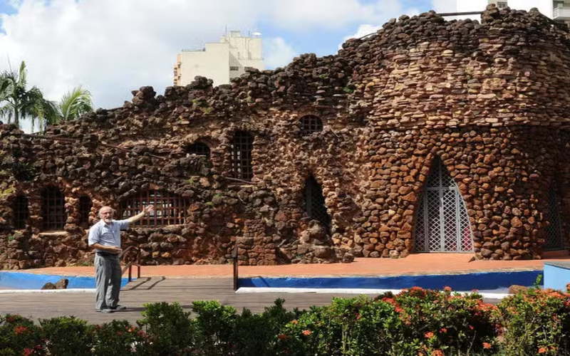
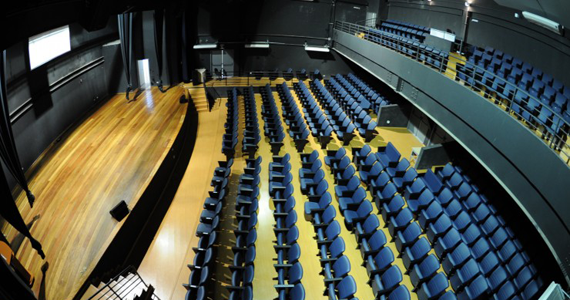
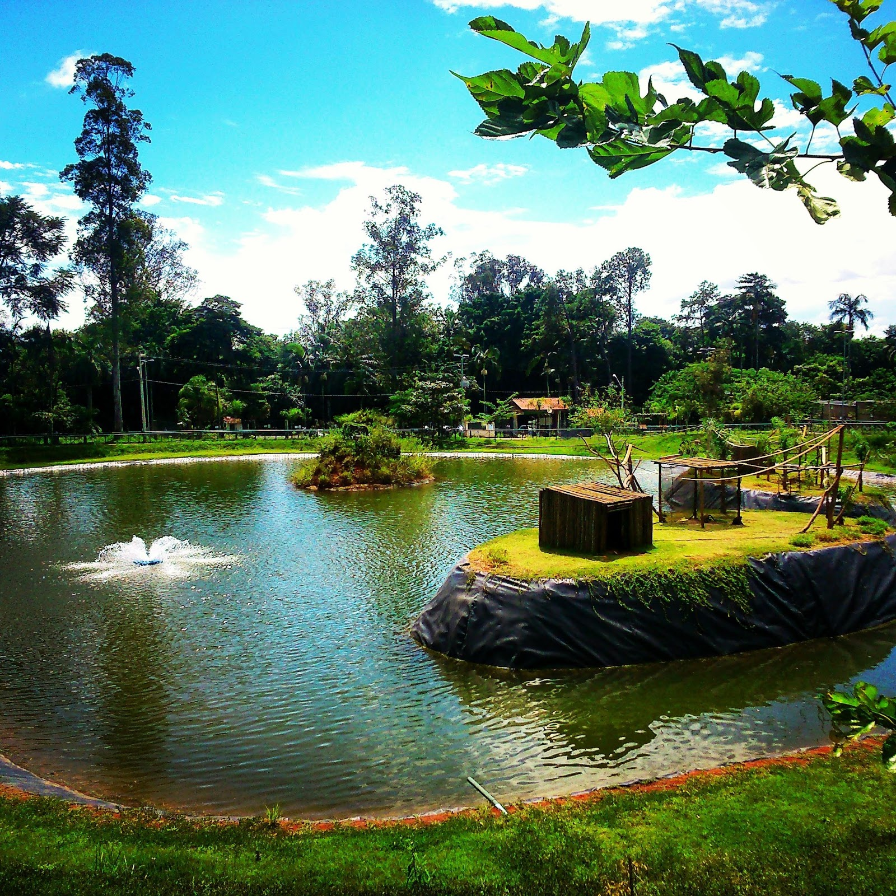
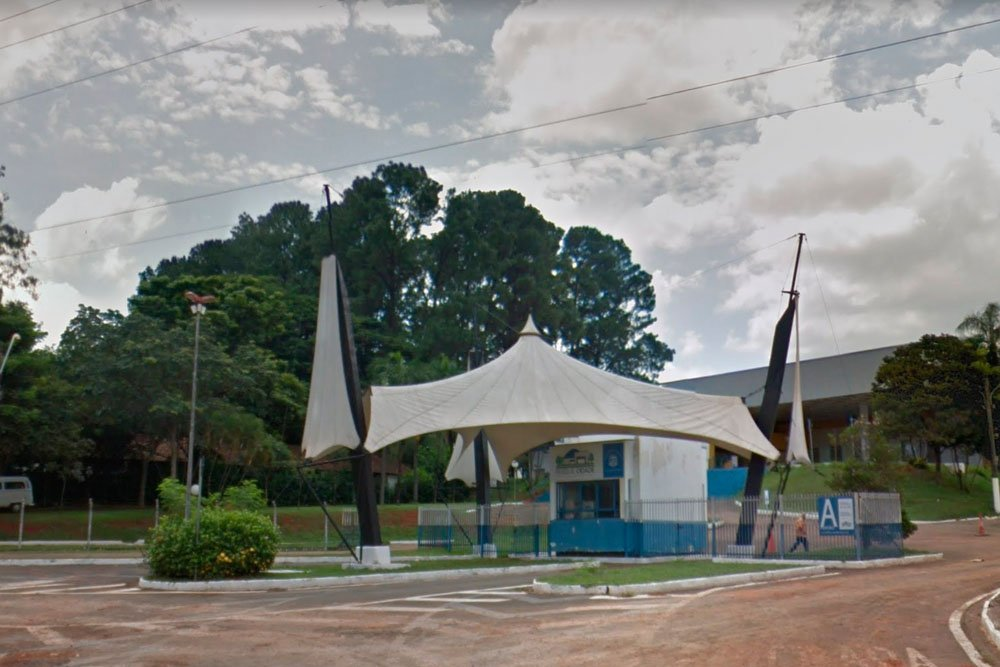

1. Praça Toledo Barros: A Praça Toledo Barros é um dos cartões-postais de Limeira. Localizada no centro da cidade, ela é o lugar perfeito para um passeio tranquilo. A praça possui ampla área verde, uma gruta e um bonito paisagismo, sendo muito frequentada tanto por moradores quanto por turistas.
Destaque: Além de ser um excelente espaço para caminhadas e relaxamento, a praça também abriga eventos culturais e festivais ao longo do ano, como shows e feiras de artesanato.
2. Teatro Nair Bello Descrição: O Teatro Nair Bello é uma das principais opções culturais de Limeira. Com uma programação que inclui peças de teatro, shows e outros eventos culturais, o teatro é um importante centro artístico da cidade. O espaço tem capacidade para centenas de pessoas e oferece uma experiência única para quem aprecia a arte.
Destaque: A programação de eventos é variada e sempre oferece espetáculos de alta qualidade, com apresentações tanto de artistas locais quanto nacionais.
3. Horto Florestal de Limeira Descrição: O Horto Florestal é uma grande área verde de Limeira, perfeita para quem deseja aproveitar a natureza e praticar atividades ao ar livre. Com trilhas, lago e um ambiente tranquilo, o local é ideal para caminhadas, piqueniques e passeios em família.
Destaque: O horto também é um ponto de visitação para observadores de aves e amantes da fotografia, devido à rica fauna e flora local.
4. Parque Cidade Limeira Descrição: O Parque Cidade Limeira é uma grande área de lazer, com espaços para atividades esportivas, pista de caminhada, lago, e muita área verde. É um excelente local para passeios em família, piqueniques ou até mesmo para praticar esportes ao ar livre.
Destaque: O parque é muito utilizado para a realização de eventos ao ar livre, como corridas e festivais, sendo um local vibrante e cheio de vida.
